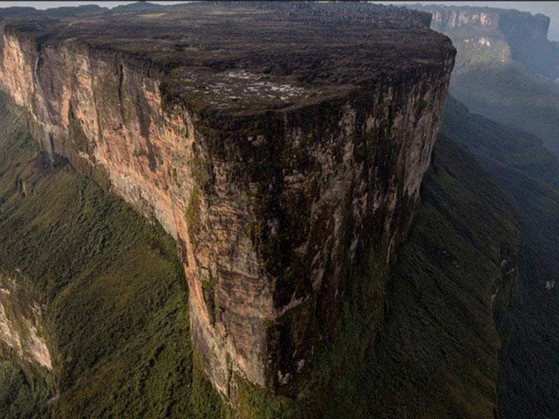
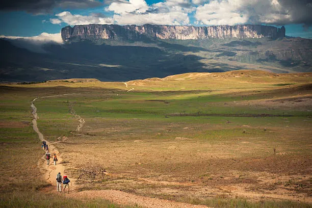
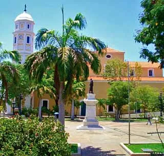
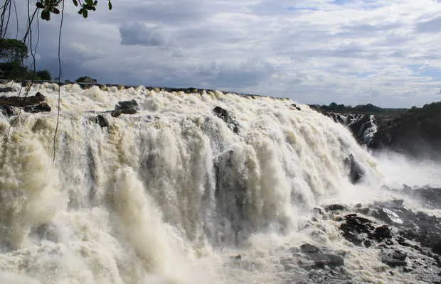
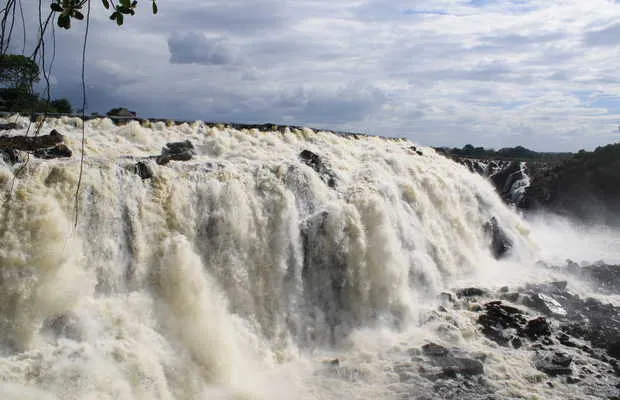
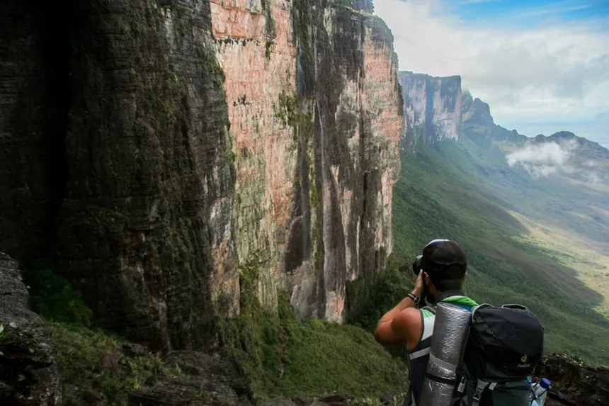

El estado Bolívar es un destino turístico popular en Venezuela, conocido por su riqueza natural y sus impresionantes paisajes. A continuación, te mostramos algunos de los sitios más importantes y emblemáticos para los visitantes.
1. Parque Nacional Canaima
El Parque Nacional Canaima es uno de los mayores atractivos de Venezuela y una de las áreas protegidas más grandes del mundo. Es famoso por sus tepuyes (mesetas abruptas) y el Salto Ángel, la cascada más alta del mundo. Los visitantes pueden explorar sus ríos, selvas y montañas a través de tours guiados, en avión o en bote.
2. Salto Ángel
El Salto Ángel, con una caída de agua de 979 metros, es la cascada más alta del mundo y un símbolo de Venezuela. Ubicado en el Parque Nacional Canaima, el Salto Ángel es un lugar imperdible para los visitantes, accesible mediante rutas en avioneta y excursiones fluviales que permiten admirar esta maravilla natural.

3. La Gran Sabana
La Gran Sabana es una vasta extensión de praderas y montañas, hogar de numerosos tepuyes, ríos, y cascadas. Entre sus principales atractivos están el Monte Roraima, el Tepuy Kukenán y las cascadas de Quebrada de Jaspe. Esta área es ideal para el senderismo, la fotografía y el turismo de aventura.
4. Ciudad Bolívar
Ciudad Bolívar, la capital del estado, es una ciudad histórica a orillas del río Orinoco. En el casco histórico se encuentran sitios emblemáticos como la Casa del Congreso de Angostura, la Catedral de Ciudad Bolívar y el Museo de Arte Moderno Jesús Soto. Es una parada obligada para aquellos interesados en la historia y la cultura local.
5. Ciudad Guayana y el Parque La Llovizna
Ciudad Guayana es una de las ciudades más grandes del estado y ofrece varios atractivos turísticos, incluyendo el Parque La Llovizna, un parque natural con hermosas cascadas y senderos para caminar. Es ideal para el ecoturismo y para disfrutar de un día al aire libre.
 

Rutas y Accesos
Los visitantes pueden acceder al estado Bolívar en avión a través del Aeropuerto Internacional Manuel Carlos Piar en Ciudad Guayana o mediante viajes en autobús desde otras regiones de Venezuela. Muchas áreas turísticas, como Canaima y el Salto Ángel, requieren transporte aéreo adicional o recorridos en bote desde puntos de acceso como Ciudad Bolívar.
